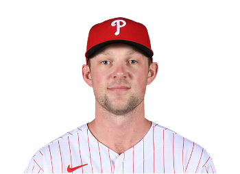
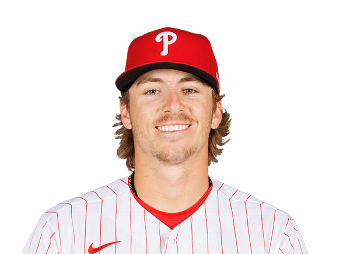
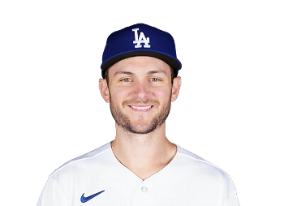
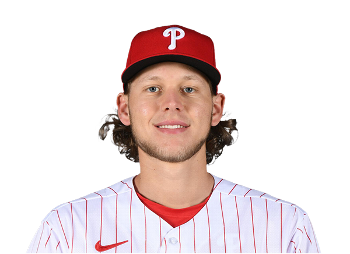
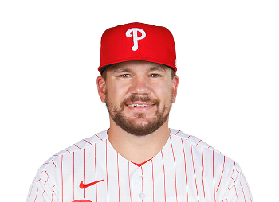
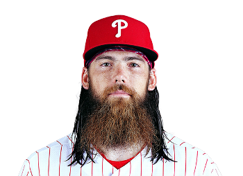
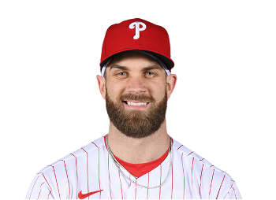
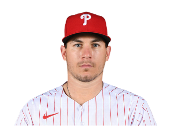
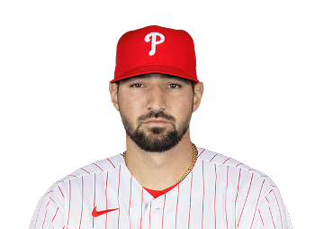
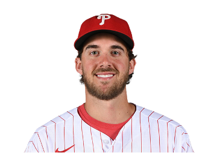

#17. Hoskins was drafted by the Phillies in the fifth round of the 2014 MLB draft. Hoskins made his MLB debut in 2017, and to this day is the worst fielder in Phillies history, errors left and right. He does hit a routine dinger; make him the DH ASAP he should not be playing the field.
#5 Coming off a magical rookie year at Shortstop, the acquisition of star SS Trea Turner will likely result in Stott moving to play Second base for the Phillies.
#6. The recent signing of Trea turner on an 11 year, $300 million dollar deal has equipped the Phillies with debatably the best shortstop in the MLB. Excited to see what he brings to the table for us!
#28. the Phillies selected Bohm third overall in the 2018 MLB Draft. He spent two seasons in their farm system before making his major league debut in 2020. We will see what he can end up doing for the Phillies as the potential starting 3rd baseman.
#12 Let the Schwarberfest Begin! Mans hits a ton of straight nukes whenever Wawa has hoagie discounts. Keep doing the thing, Wawa.
#16 the Phillies traded with the Angels for Marsh during the 2022 season, in hopes of having a quick, dependable Centerfielder who could start in the event of a playoff run. He brought exactly that to the table.
#3. The $330 Million Dollar Man. 1st overall pick in the 2010 MLB draft. 2015 + 2021 NL MVP. Let's hope he has a few other "swings of his life" throughout the rest of his time here. Many say he has proven himself worthy of that huge contract after his clutch performance during the 2022 season.
#10. Referred to by many as the best catcher in baseball.Realmuto recently re-signed with the Phillies in 2021 on a five-year, $115.5 million contract, the largest catcher contract in MLB history. 2022 First team all-MLB
#8. Signed last offseason after he had a red-hot season with the Reds on a 5 year, $100 million dollar deal, Castellanos struggled quite a bit at the plate this season. With only 13HRs this season, his main highlights came out of right field this postseason.
#27. Nola is the Phillies' top-of-the-rotation starter and ace, and has been the team's Opening Day starting pitcher in every season since 2018. 2018 All-star. 2022 second team all-MLB.
